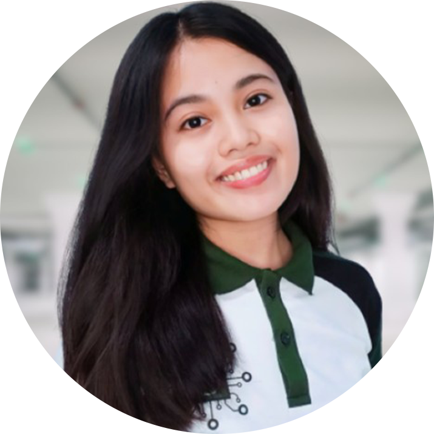

Joveyn S. Icabales | Intern 
Teresa, Rizal
Professional Summary
A BS Computer Engineering student seeking an opportunity as an intern at your company/institution in the Web Department.
I am eager to apply ang expand my skills in a professional setting.
I possess a keen eye for design and a passion for creating visually appealing
user experiences. I am committed to contributing to the success of the team
and open to constructive criticism to learn and further hone my skills in
areas for improvement.
Affiliation
Association of Concerned Computer Engineering Students
General Secretary '22-'23
- Promoted and implemented the Creative Committee within the organization to foster collaboration and equitable task distribution among the officers, enhancing overall productivity and mitigating the risk of burnout
- Created a social media content and organized the timing of posts on Facebook page, to promote theorganization’s events and activities
- Managed all the necessary paperwork required to execute events and activities, demonstrating strong organizational skills
- Served as a liaison between the computer engineering students, faculty members, and theorganization’s committee, addressing their concerns and fostering positive relationships
- Assisted in administrative tasks such as maintaining records, and managing documentations of theorganization’s events and activities
- Collaborated with team members to organize and execute events that showcased the talent and skills, fostering a sense of collaboration among computer engineering students in the URS-Morong
Future Engineers' Club
General Secretary of CpE Director '22-'23
- Collaborated with FEC representatives and fellow ACCESS members to plan and execute joint projects, and events that catered to the specific needs of engineering students
Education
Bachelor of Science in Computer Engineering | 2020-Present
University of Rizal System Morong, Campus
GWA 1.687
Key Courses: Web Development, Object-Oriented Programming, Database System, Data Structures and Algorithms, Computer Network and Security, Programming Logic and Design
Skills
- HTML, CSS, JavaScript, Python, C++
- Adobe Photoshop, Adobe InDesign, Adobe Illustrator, Canva, AutoCAD
- Eagerness to Learn
- Adaptability
- Attention to detail
- Communication
- Technology Proficient
- Administrative
- Teamwork
References
Leilane SD. Carigma, MIT | 09456815112
Program Head, BS Computer Engineering
Fredelina F. De Leon, MAEd. | 09167515068
SIPP Coordinator, BS Computer Engineering